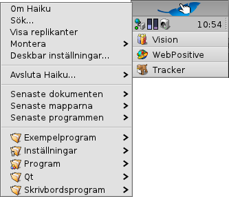
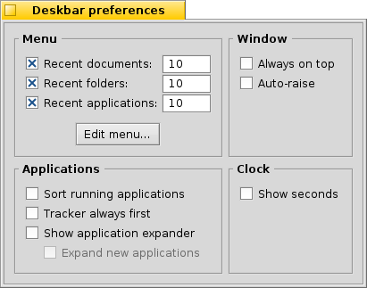
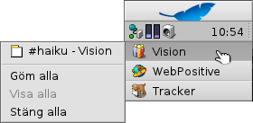

Svenska
Svenska Français
Français Deutsch
Deutsch Italiano
Italiano Русский
Русский Español
Español 日本語
日本語 Українська
Українська 中文 ［中文］
中文 ［中文］ Português
Português Suomi
Suomi Slovenčina
Slovenčina English
English| Innehåll |
|
Deskbar's meny Verktygsfältet Listan över aktiva program |
Deskbar
Deskbar är den lilla panelen som som standard är placerad i det övre högra hörnet på skärmen. Det är Haiku's version av Windows aktivitetsfält med startknappen. Deskbar innehåller en meny från vilken du kan starta program och inställningar, ett verktygsfält med en klocka och längst ner en lista över de program som är aktiva.

Du kan flytta Deskbar till vilket hörn som helst, eller placera det som en list överst eller underst på Skrivbordet. Du flyttar Deskbar genom att greppa vid den knottriga fältet bredvid verktygsfältet och sedan dra och släppa Deskbar på dess nya position. Du kan också fälla ihop Deskbar till en mer kompakt utformning genom att dra det knottriga fältet och släppa det på Deskbar's meny.
 Deskbar's meny
Deskbar's meny
Längst upp i Deskbar finns en knapp med ett löv. Klicka på den för att öppna Deskbar's meny:
Om Haiku - Visar grundläggande information om sytemet, licenser och dess upphovsmän.
Sök... - Öppnar Sök dialogfönstret.
Visa replikanter - Visar/gömmer Replikanternas handtag, med vilken du kan flytta, ta bort och komma åt replikanternas meny.
Montera - Erbjuder samma alternativ som vid höger-klick på Skrivbordet (se Montera volymer).
Deskbar inställningar... - Öppnar en panel för konfiguration av Deskbar.
Avsluta Haiku - Erbjuder alternativen att eller Haiku.
Senaste dokumenten, mapparna och programmen - Visar dom senaste öppnade dokumenten, mapparna och programmen (se nedan).
Program, Exempelprogram, Skrivbordsprogram och Inställningar - Visar alla installerade program, exempelprogram, skrivbordsprogram och inställningar (se nedan).
Deskbar's inställningar

Meny
Här kan du ange hur många senaste dokument, appar och program som skall visas i Deskbar's meny, eller om du inte vill se dom över huvud taget.
Knappen öppnar mappen /boot/home/config/be/. I den hittar du filerna och mapparna som syns i Deskbar; , , , och .
Du kan ta bort eller lägga till länkar till program, dokument eller till och med sökningar genom att kopiera/ta bort dom från denna mapp.Det är till och med enklare att dra en fil, mapp eller en sparad sökning och släppa den där du vill ha den i Deskbar.
Window
The Deskbar always stays above all other windows. The Deskbar pops to the front if the mouse pointer touches it. The Deskbar is reduced to only a few pixels and only pops up if the mouse pointer touches them. Program
Sorterar listan över aktiva program i alfabetisk ordning. Även om du sorterar efter alfabetet så kommer Tracker att vara först i listan. Visar en pil som kan visa/gömma alla fönster som tillhör ett program. Visar ett programs alla fönster vid start. Klocka
Lägger till sekunder i klockan.
Verktygsfältet

Bland mycket annat innehåller verktygsfältet klockan. För musen över den för att visa dagens datum, eller klicka för att visa en kalender. Höger-klicka för att gömma/visa klockan eller starta Tid där tiden kan ändras.
Any program can install an icon in the tray to provide an interface to the user. The email system, for instance, shows a different symbol when there's unread mail and offers a context menu to e.g. create or check for new mail. ProcessController is another example that uses its icon in the tray to provide information (CPU/memory usage) and to offer a context menu.
Listan över aktiva program

Du kan växla till ett aktivt program genom att klicka på dess fält i Deskbar och i menyn välja (en av) dess fönster. Genom att höger-klicka kan du minimera eller stänga ett fönster, eller hela programmet.
Om du har aktiverat visning av program-expanderare i Deskbars inställningar, kan du expandera/kollapsera listan över programmens fönster.
In front of every application's windows is a symbol providing info on its state. A bright symbol means a window is visible, a dark one that it's minimized. Three lines in front of a symbol shows that it's not on the current workspace.